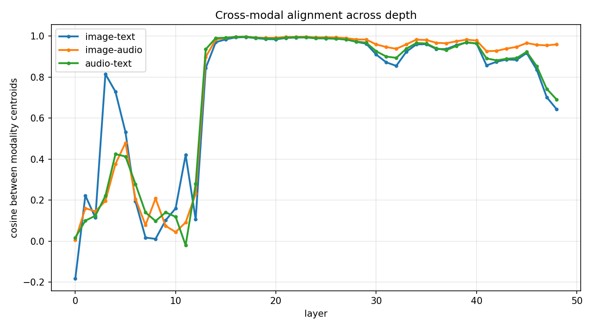
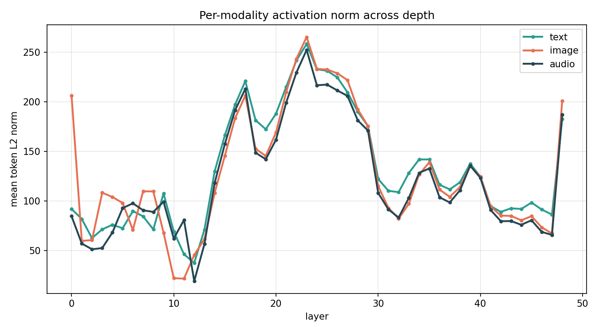
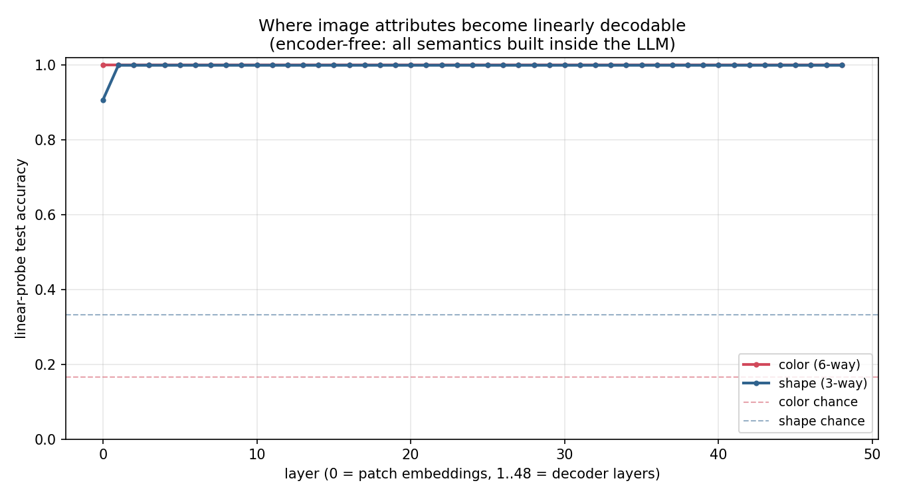
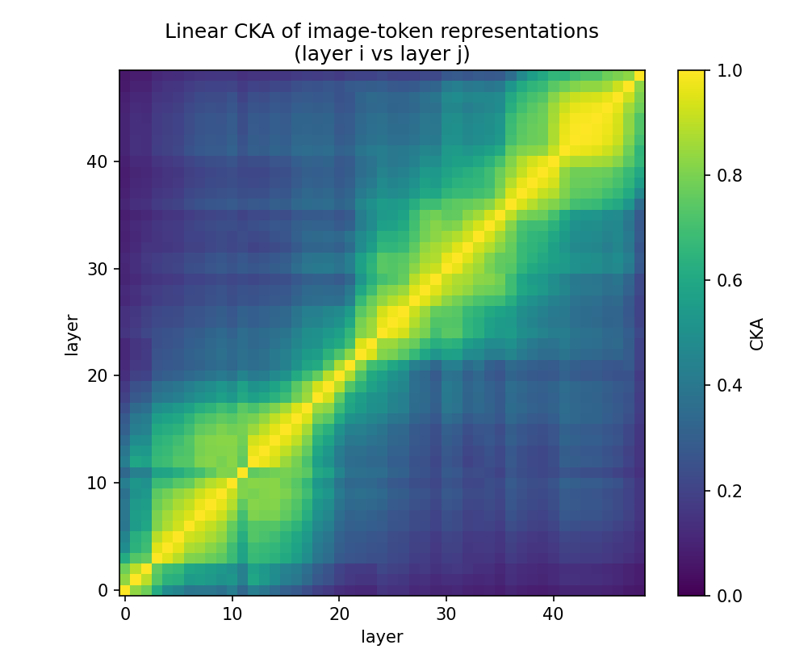

A local, reproducible study of google/gemma-4-12B-it — a model that ingests images and audio with no vision or audio encoder. Raw 48×48 pixel patches and raw 40 ms waveform frames are projected straight into the embedding space of a single 48-layer decoder-only LLM. This repo measures exactly how.
Each modality reaches the LLM through a handful of LayerNorm / Linear layers — not a ViT, not a Conformer. Image and audio become “soft tokens” scattered into the same sequence the text tokens live in.
If there were encoders, they'd show up in the parameter count. They don't.
With no encoder, every bit of cross-modal "understanding" is built inside the shared stack. Probing and geometry localize where and how.

Image / audio / text centroids are near-orthogonal early, then snap to ~0.99 cosine and share a subspace through the mid-stack.

Token norms collapse to a minimum near layer 11–12 (the alignment pivot), then spike together — an outlier regime shared across modalities.

Low-level appearance is decodable straight from the linear patch projection; spatial structure forms over the first decoder layers.

Layer-to-layer CKA of image tokens is high only locally; CKA(L0, L48) ≈ 0.07 — representations are transformed end to end.
# environment (Blackwell sm_120 → cu128 wheels) uv venv --python 3.12 .venv uv pip install -r requirements-lock.txt .venv/bin/hf download google/gemma-4-12B-it --local-dir ./models/gemma-4-12B-it # run the study .venv/bin/python scripts/01_architecture_report.py # param anatomy (no weights) .venv/bin/python scripts/02_modality_trace.py # per-layer / per-modality shapes .venv/bin/python scripts/03_linear_probes.py # where semantics emerge .venv/bin/python scripts/04_representation_geometry.py # norms · anisotropy · CKA · alignment .venv/bin/python scripts/05_build_report.py # assemble the PDF